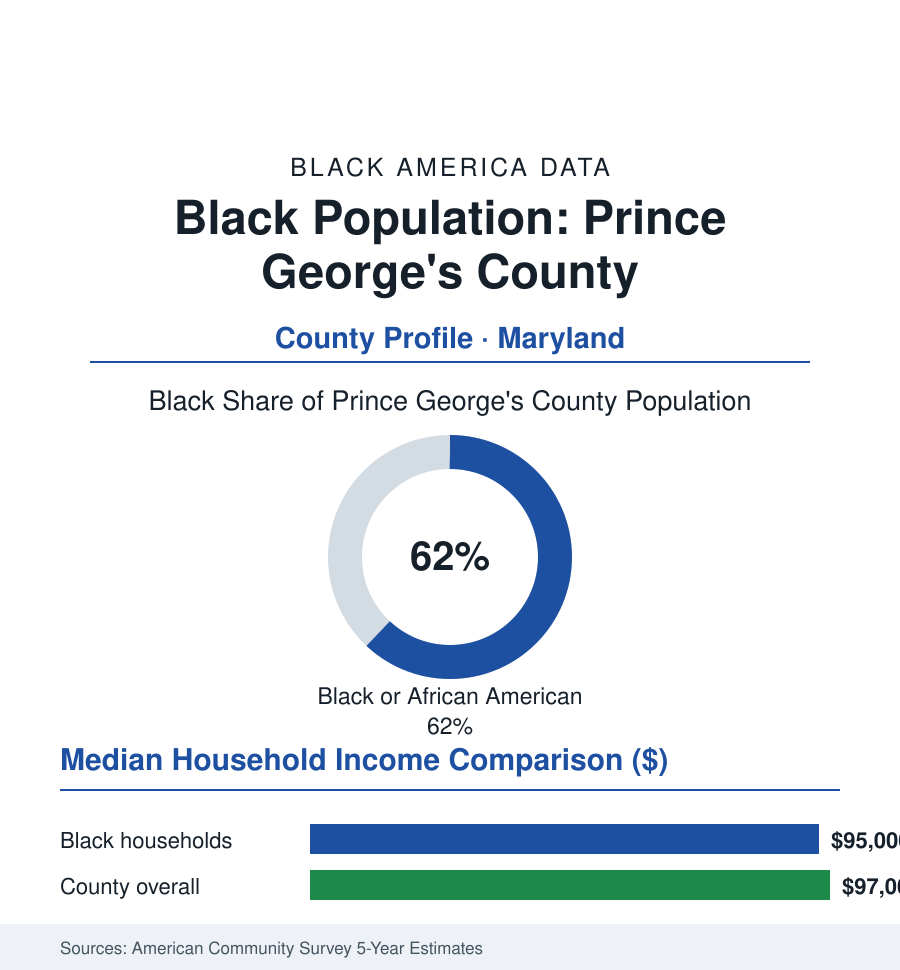

Black Cities
Black Prince George's County: The Wealthiest Majority-Black County in America
Nearly a million people, almost two-thirds Black, with a median household income rivaling rich suburbs everywhere — Prince George's County is the suburban file's Exhibit A. The data portrait.

Prince George's County's Black community numbers roughly 590,000 people — about 62% of the county's 950,000 residents — in the Maryland suburbs east of Washington, D.C., and its data hold a sentence no other large American jurisdiction can write: a majority-Black county whose median household income, in the high ninety-thousands overall and mid-ninety-thousands for Black households in the survey estimates, stands among the highest of any county in the nation. This profile reads the Exhibit A of Black suburban affluence.
How the County Was Built
The county's formation is the federal city's overflow, racially rerouted: Washington's Black middle class — the federal workforce of the public-sector article, the Howard faculty, the U Street generation's grandchildren — suburbanized across the District line from the 1970s onward, as fair-housing law opened the Maryland suburbs and the county's builders sold them the split-levels and colonials the Virginia side had marketed to their white counterparts a generation earlier. The census series records the succession decade by decade: the county's Black share climbing through the seventies and eighties as white residents departed for the exurban ring (the white-flight pattern of the suburbanization file, here with the destination county itself majority-Black by the 2000s), the housing stock aging from postwar subdivisions to the estate developments of Bowie, Upper Marlboro, and Mitchellville — the gated, golf-course subdivisions whose Black professional households became the county's national image in the lifestyle press. The institutional shelf filled to match: the county government itself (Black county executives and councils for a generation — the county's politics a Black professional class governing itself at scale), the school system among the largest majority-Black districts in the nation, the churches at civic scale, the federal installations (Andrews' air base, the Census Bureau's own headquarters at Suitland — the counter of this atlas employing the county's counters, NASA Goddard and the intelligence campuses at its edges) anchoring the employment base in the government's recession-proof tiers. The county's political record made the national files early and often — its executives and state's attorneys drawn from the community they governed, its congressional representation continuous — the suburbanization file's rare case of demographic succession arriving with the tax base and the ballot box in the same hands at the same time.
The Modern Ledger: Affluence With Footnotes
The county's data carry the paradoxes of success in full view: the income rows at the national top against the wealth rows a step behind (the inheritance file's arithmetic — the county's affluence substantially first-generation, its home equity younger, its 2008 foreclosure data among Maryland's hardest hit in the housing-crisis record, the subprime era's targeting of exactly this profile of borrower in the lending studies); the retail file's famous gap (the county's decades-long complaint in the planning data — high incomes, thin upscale retail, the dollars leaking to the whiter counties' malls, the 'retail racism' argument of the development literature made by a county that can prove its purchasing power to the dollar); the schools' middle position in the state tables against the county's income rank (the funding and outcomes files' recurring riddle of the affluent Black district); and the crime-and-services debates of its politics conducted, as nowhere else in this section, entirely within a Black electorate and a Black government — the accountability loop closed, the arguments about policing, development, and schools as intra-community questions in the public record. The newer data add the county's second act: the Blue Line corridor's development, the hospital and university anchors' expansion, the Purple Line's arrival, and the demographic frontier moving again — the county's Latino and African immigrant growth (the foreign-born file's Maryland chapter) layering new communities over the Black suburban foundation its founders built.
Reading Prince George's Numbers
Sixty-two percent of nearly a million people, at an income the rich counties recognize: Prince George's County is the data's standing rebuttal to the lazy equation of Black with poor that this entire atlas exists to complicate. Its residents built the proof in the most American form available — a suburb, with equity, a tax base, and a government of their own — and then discovered, in the retail and wealth rows, which parts of the bargain still don't arrive on time. The census counts the county. The county keeps counting what it's owed.
More in Black Cities
Black Atlanta: Population, Distribution, and Growth of a Black Metropolis
Metro Atlanta holds more than two million Black residents — roughly one in three, second only to New York. The suburban distribution, migration history, and composition of Black Atlanta in the census data.
Black New York: The Largest Black Population in America
The New York metropolitan area holds about 3.4 million Black residents — more than any metro in the nation — and the city itself about two million. The census profile.
Black Washington: The District and the Metro
The Washington metro holds about 1.6 million Black residents, and the District itself — long a majority-Black city — now records a Black share near 41 percent. The census profile.
Source: U.S. Census Bureau, 2020 Census and American Community Survey 5-year estimates; Prince George's County government; Maryland Department of Planning data.